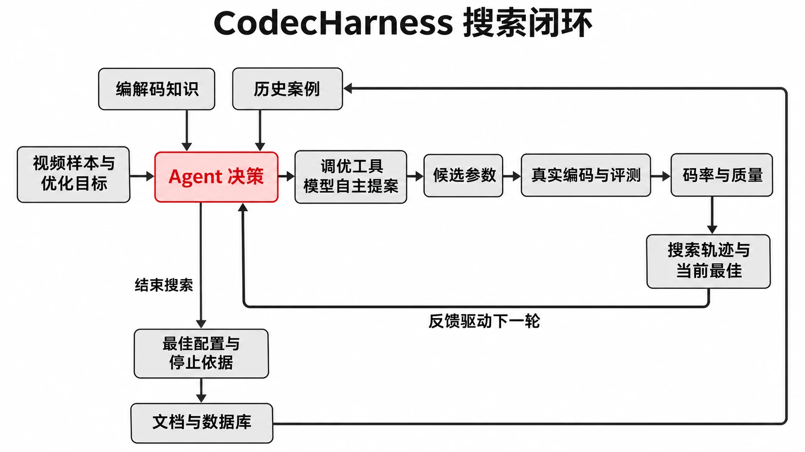
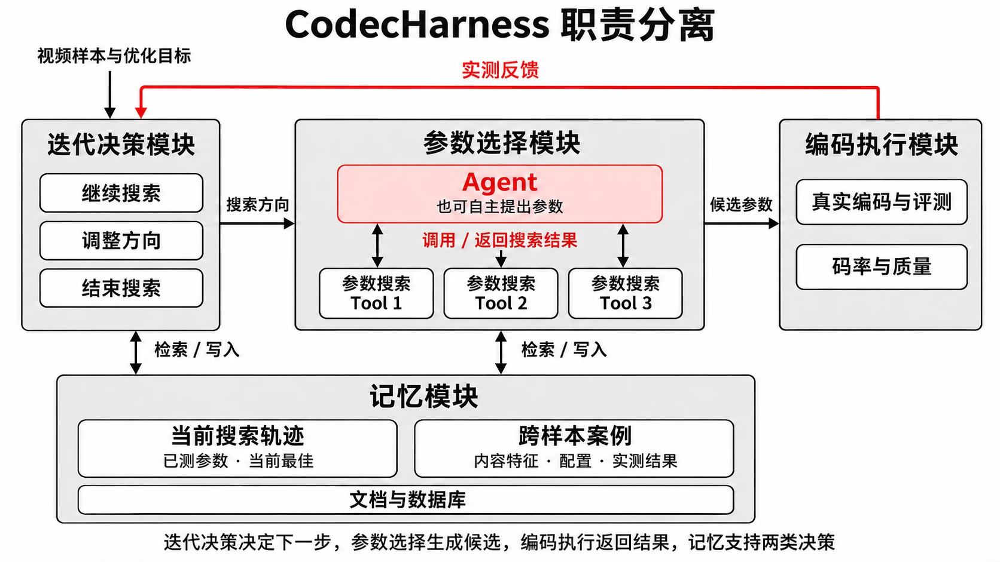
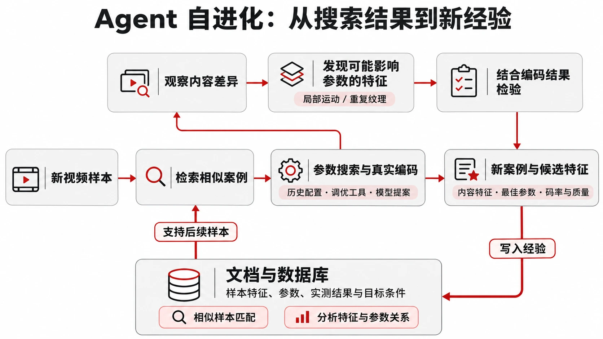

引言（Introduction）
把一段视频交给编码器，选择一个预设，然后等待输出。这是一种简单而有效的工作方式。但当我们开始为具体内容寻找更合适的配置时，问题就复杂起来了：参考帧应该怎样设置？运动搜索值得投入多少计算？上一段视频上有效的参数，为什么在这一段上没有带来同样的改善？
CodecHarness 将领域知识、参数调优方法和历史案例组织到同一个 Agent 搜索过程中。模型理解当前样本，决定下一步尝试什么；编码器执行候选配置，返回实际结果；搜索结束后，样本特征、最佳可行配置和选择依据成为后续任务可以检索的经验。
我们希望，一次搜索的价值能够延伸到当前视频之外。新样本到来时，系统可以从已经积累的知识和案例出发，再通过真实编码确认这些经验是否适用。
本文将介绍为什么需要这样的框架、一次参数搜索如何完成，以及知识与记忆如何参与其中。这里讨论的是报告提出的设计机制；在保持编码效果的同时减少搜索次数，仍是需要通过实验验证的目标。
背景（Background）
编码器预设把大量选项打包成易于使用的配置。对于用户来说，这减少了理解参数和逐项选择的负担。但预设需要适用于广泛内容，而一段具体视频有自己的运动、纹理、场景结构和视觉细节。
同样的配置在不同内容上可能表现不同。同样一个参数的调整，也可能因为其他选项发生变化而产生不同效果。整数、连续值和类别选项交织在一起，使搜索既难以穷举，也难以靠逐项试探覆盖有效组合。
逐视频调优已经为这个问题提供了基础。例如，Azevedo 等人的工作通过离线贝叶斯优化寻找内容相关配置，再利用内容特征预测新视频的参数。它说明了一个值得继续探索的方向：过去视频上的搜索结果，可以帮助后续视频选择配置。相关研究见作者论文。
当我们把注意力放到持续处理新样本的调参系统上，还需要连接几个环节：如何结合参数含义与当前反馈决定下一步？什么时候应该调用搜索方法，什么时候可以直接提出配置？历史案例应当如何保存，才能在另一段视频上继续发挥作用？
CodecHarness 围绕这些问题组织搜索，主要目标包括：
- 让知识参与决策。 用编解码资料帮助模型理解参数含义、依赖关系和可能的调整方向。
- 让试验推动搜索。 根据当前样本的真实编码结果，持续调整候选与方法选择。
- 让经验跨样本复用。 把内容特征、配置、目标条件和实测结果一起保存，再用于后续任务。
- 让结束有据可查。 保留当前最佳配置与停止依据，使一次搜索的结论能够被理解和再次使用。
整体概览（Overview）
一次常规参数优化通常包含候选生成、执行评估和结果比较。CodecHarness 在这个过程里加入了持续决策：Agent 可以调用已接入的调优方法，也可以结合参数知识、内容信息和历史案例自主提出配置。
不论候选来自哪里，都需要在当前任务的同一目标下接受评估。模型负责提出行动，实际效果由编码与评测反馈确认。


这个过程包含两个时间尺度。单个样本内，Agent 根据试验结果修正判断；多个样本之间，系统通过记忆积累和检索复用已有经验。两者通过真实编码结果连接起来。
职责分离（Separation of concerns）
CodecHarness 将搜索过程划分为迭代决策、参数选择、编码执行和记忆四个模块。迭代决策组织搜索的推进，参数选择生成具体配置，编码执行返回真实结果，记忆模块保存搜索轨迹与跨样本经验，为迭代决策和参数选择提供依据。
迭代决策模块决定搜索如何继续。 它结合当前最佳配置、近期改善情况、已探索方向和相关历史经验，判断继续搜索、调整方向，还是结束当前样本的探索。输出的是下一轮的搜索方向或停止决定。
参数选择模块将搜索方向转化为候选参数。 该模块以 Agent 为核心，下接多个参数搜索 Tool。Agent 结合编解码知识、当前样本特征和记忆中的案例选择工具，并利用工具返回的配置与搜索结果形成候选；也可以自主提出参数。例如，围绕帧结构进行探索时，该模块负责确定本轮要测试的参考帧、B 帧等选项组合。
编码执行模块验证候选的实际效果。 它接收具体参数，执行真实编码与评测，返回码率、质量等实测结果。这些结果进入搜索轨迹，供迭代决策判断下一步，也为参数选择提供后续调整的依据。
记忆模块为两类决策提供共享依据。 它保存当前样本的已测参数、实测结果与当前最佳，也通过文档和数据库保存跨样本的内容特征、配置、目标条件和搜索结论。迭代决策模块利用这些记录判断探索是否仍有价值，参数选择模块利用它们匹配案例、选择工具和调整候选；新发现的候选特征与搜索经验也写回同一个记忆模块。
这样，一轮搜索就形成了清晰的交互：迭代决策确定方向，参数选择给出配置，编码执行返回结果，再由共享记忆支撑下一轮判断。


一次参数搜索（A CodecHarness request）
为了说明这些部分如何协作，下面以一段新视频为例。这个过程是机制示意，不代表一次已完成的性能实验。
建立起点
任务带来当前视频和优化目标。系统利用统计特征与描述特征理解样本，并检索相关知识和历史案例。
模型此时需要判断：哪些内容性质可能影响参数选择？哪些已有配置值得在当前视频上测试？如果没有合适的案例，哪些参数知识可以帮助建立初始候选？
知识提供冷启动的依据。随着案例增加，历史经验也能参与起点选择。
提出候选
Agent 可以直接提出参数，也可以调用已接入的调优方法。历史配置可能成为一个待测候选，其中部分参数也可能根据当前内容作出调整。
例如，一个案例的运动统计与当前视频接近，但场景描述和画面结构不同。模型可以把它作为探索线索，同时保留对适用性的疑问。检索找到的是参考案例，当前视频上的试验负责给出答案。
执行与反馈
候选交给编码器执行，再按当前任务目标比较结果。Agent 将反馈放回搜索轨迹，更新当前已测最佳，并判断下一步行动。
有改善时，可以继续探索相关方向；没有改善时，需要结合已探索的配置判断是否调整参数、改变候选来源，或者结束搜索。搜索因此成为连续的“提出—验证—解释—再行动”过程。
结束与保存
Agent 综合当前最佳、近期改善、已探索方向和相关经验决定是否继续，并保留结束依据。输出的“最优参数”指本次搜索找到的最佳可行配置，其结论范围由实际搜索覆盖和任务条件决定。
随后，样本特征、配置、目标条件和实测结果进入文档与数据库。下一次搜索便多了一份可以参考的案例。
搜索驱动
对于一段视频，下一轮应该继续调整参考帧和 B 帧结构，还是转向运动搜索与自适应量化？CodecHarness 将真实编码反馈和参数搜索工具的结果一起交给 Agent，用来决定接下来的探索方向。
编码反馈说明一组参数在当前视频上的实际表现：码率和质量如何变化，哪些有所改善，哪些仍不满足目标。参数搜索工具则提供一轮探索的结果：尝试过哪些组合、其中表现最好的是哪一组，以及这些试验相对当前最佳是否带来了进一步改善。工具找到的配置及其评测结果，也会进入同一条搜索轨迹，参与后续判断。
以“保持质量的同时降低码率”为例。假设工具返回的一组参考帧与 B 帧配置降低了码率，却同时造成质量下降，Agent 就需要继续调整参数，寻找符合目标的组合；如果某个方向经过多轮尝试仍没有改善，则可以结合参数知识，转向其他选项，或者调用另一种调优方法。这里的参数调整是搜索过程的示意，具体效果仍由当前视频的编码结果确定。
已有调优方法因此既是候选来源，也是反馈来源。模型可以沿着工具找到的较好配置继续调整，也可以根据内容特征提出新的组合，再交给编码器验证。不同来源的配置按相同目标比较，让领域知识、自主提案和工具搜索能够在一段视频的优化过程中衔接起来。
结束搜索时，Agent 同样需要综合这些信息：当前最佳的码率与质量表现，近期工具搜索与自主调整是否仍有收益，哪些参数方向已经探索。保存最佳可行配置的同时，也保存停止依据，使后续案例能够说明这组参数是怎样找到的。
Agent 自进化
编码参数搜索的成本来自反复试验。对于新视频，如果每次都从通用预设重新探索参考帧、B 帧、运动搜索和自适应量化等选项，过去样本上已经付出的计算就很难继续发挥作用。CodecHarness 的自进化围绕这一点展开：将完成的搜索转化为带有内容条件的经验，改变后续样本的搜索起点与调整方向。
假设系统完成了一段高运动视频的调参。留下的案例会把运动与纹理等统计信息、场景和画面结构描述、最佳可行参数，以及对应的质量、码率和目标条件放在一起，分别通过文档和数据库保存。
| 载体 | 保存的重点 | 对后续搜索的作用 |
|---|---|---|
| 文档 | 内容描述、搜索依据与结论 | 帮助模型理解案例的背景与适用条件 |
| 数据库 | 可查询的特征、配置与实测结果 | 支持按当前任务查找和比较记录 |
下一段视频到来时，检索增强生成（RAG）将相关案例带入上下文，Agent 据此选择值得测试的历史配置，并根据当前反馈决定哪些参数值得保留、哪些需要重新搜索。匹配时还需要考虑案例的优化目标：即使内容相似，面向不同码率与质量目标得到的配置，也需要结合当前任务重新判断。
积累经验的过程也包括发现新的内容特征。模型结合样本内容、参数知识和搜索结果，自主寻找可能影响参数选择、但尚未被现有特征充分表达的性质。例如，两段视频的整体运动统计接近，模型可能进一步关注运动是否集中在局部区域，或画面中是否存在细密的重复纹理，并将这些候选特征的描述或提取结果连同对应参数、实测表现写入数据库。这样，后续搜索可以继续使用和检验这些发现。
这些新增特征有两方面作用。匹配历史案例时，Agent 可以据此进一步区分内容类型，为新样本选择更相关的配置作为搜索起点；分析参数效果时，模型可以对照具有不同特征的样本及其试验结果，判断哪些内容性质可能与帧结构、运动搜索或自适应量化等选项的表现有关。随着案例增加，系统能够逐步细化“什么样的内容值得尝试什么参数”的判断；特征与参数效果之间的关系仍需要后续编码试验验证。
这种复用并不要求两段视频使用完全相同的配置。例如，两段视频的运动特征接近，但纹理和画面细节不同，Agent 可以把历史帧结构配置作为起点，同时重新探索自适应量化等选项。这样，历史经验能够具体影响先测哪组参数、接下来调整哪一部分，以及何时需要调用更广泛的搜索。
新视频也会补充经验的适用条件。如果历史配置在当前样本上没有满足质量要求，后续搜索得到的配置及其内容差异会形成新的案例。再次遇到类似内容时，模型便有更多依据判断应该参考哪一次结果，以及原有参数需要怎样调整。
由此，单样本搜索与跨样本积累形成同一个闭环：已有经验帮助选择候选，真实编码修正当前判断，模型补充可能影响参数选择的特征，新的特征与搜索结论再进入记忆，参与下一次案例匹配和参数搜索。 基础模型可以保持不变，而 Agent 对内容的区分、对特征与参数关系的理解，以及选择参数和调优方法的依据持续丰富，这就是 CodecHarness 所指的自进化。


我们希望这一过程能够减少新视频达到同等编码目标所需的真实试验次数。它的效果需要围绕相同的编码目标验证，同时观察最终码率、质量表现和搜索次数，确认经验复用确实让后续参数搜索更有效。
仍在探索（Still learning）
这一设计把内容理解、参数搜索和经验积累连接起来，也留下了几项需要持续验证的问题。
解释需要落到编码结果上
模型可以根据参数含义和内容性质提出假设，但编码参数之间存在交互，内容对效果的影响也很复杂。搜索闭环的价值，是让这些判断持续接受实际结果的修正。
相似案例需要连同条件使用
统计量相近或内容类别相同，都不足以保证参数能够迁移。描述特征、目标条件与实测依据共同帮助模型判断案例是否相关，当前样本的编码反馈则完成适用性确认。
记忆需要保留选择的依据
只有最终配置的记录，很难解释应该怎样调整。把内容特征、搜索结论和条件一起保存，可以为后续判断留下更多上下文。文档与数据库的组合正是围绕这一需求设计的。
更少搜索与编码效果需要一起衡量
CodecHarness 希望在保持编码效果的同时减少单次参数搜索次数。验证这一目标，需要同时观察搜索投入和最终配置表现，并明确比较所使用的目标与试验条件。目前的报告没有提供能够量化这一收益的实验结果。
未来计划（Future plans）
接下来的关键，是通过实验检验这个闭环：领域知识是否改善冷启动？统计特征与描述特征是否帮助找到更相关的案例？历史经验能否迁移到新样本？Agent 对候选来源和停止时机的选择，能否在保持编码效果的同时减少搜索次数？
这些问题将决定知识和记忆应当如何组织，也将帮助我们理解框架在哪些内容与目标条件下最有价值。
我们希望 CodecHarness 能像持续积累实验笔记的编码专家一样工作：带着已有知识开始，为当前视频做实际试验，再把结果留给下一次搜索。每一段视频都需要自己的验证，而每一次验证都可能为后续任务增加一份有用的经验。